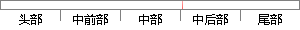

其中问卷ID,问题ID,选项ID,分别为参照问卷表，问题表，选项表中各主键的外键，选项ID为可空类型。
片段位置图

相似结果|
相似片段 1：、客户名、客户类型、单位规模、客户所在地、电子邮件、联系电话）（3）问题（题目 ID、题型、标题、选项数量、选择上限、录入员、选项 1、…、选项 20）（4）问卷（问卷 ID、问卷名、问题数量、开始
相似片段 2：Edituser Varchar 否 编辑人(16)调查问卷问题信息表调查问卷问题表，这个表主要是新建调查问卷之后向其中添加的问卷题都存放在这里，这个表中的字段比较多，主要包括问题ID，问卷ID，问题内容，选项
相似片段 3：记录和选项记录，分别存储在不同的数据库表中。问卷基本信息数据库表的字段有问卷 ID、问卷名称、调查人群、专业方向、问卷状态；问题记录数据库表的字段有问题 ID、问题名称、问题说明、问题类型、所属问卷
相似片段 4：的一级指标；PJWT是教学评教中的问题表，其中包含的是评教问卷中的二级指标也是最底层的指标；PJwTJG是每个问题的得分表，其中包含问题结果ID、问题类别ID、问题ID、选项ID、评教结果ID和问题
相似片段 5：根据数据流程分析和数据库需求分析可知，本系统中核心业务流程涉及的实体主要有用户、测评问卷、问卷问题、问题选项、测评、答卷答案、模型、方案、变量、路径、报告，产生的数据字典如下：用户：用户ID，用户名
相似片段 6：数据插入数据库strlD是问题ID，strltemId是选中的选项的ID项的ID#region把关联题数据插入数据库strlD是问题ID，strItemld是选中的选#region找到此次调查问卷题目
相似片段 7：… …… …… …… ……选项 20 Option20 varchar（100）20表 4-4 问卷信息问卷 ID SID char(10) 否 主键问卷名 Sname varchar(100) 否
相似片段 8：40问卷问卷ID题数问卷名称 类型备注图 4-11 问卷实体题目实体主要有题目 ID、题号、题目内容、备注等属性，如图 4-12所示。题目题目ID题号 内容图 4-12 题目实体问卷选项实体主要有
|
※ 片段修改建议 ※
近似词参考：- 其中：此中 个中
- 问题：题目
- 问题：题目
- 类型：范例
系统自动生成语句：此中问卷ID,题目ID,选项ID,分别为参照问卷表，题目表，选项表中各主键的外键，选项ID为可空范例。
注：本片段修改建议为系统自动生成，仅供参考。